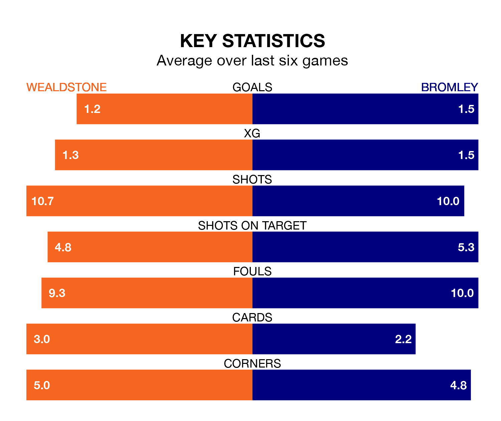

Bromley travel to Wealdstone on late Tuesday in the National League.
The visitors come into the game on the back of a draw in their last match, having tied with Oldham Athletic 0-0 away.
Wealdstone also drew their last match, 1-1 against Southend United, with their goal scored by Sean Jordon Adarkwa.
Bromley are third in the table after 37 games, of which they have won 18 and drawn 12, earning 66 points.
Wealdstone are 15 places behind the Ravens in 18th, with 11 wins and 10 draws putting them on 43 points.
In the last 10 years, Wealdstone and Bromley have played each other on 10 occasions. Wealdstone won one of them, Bromley four, and they drew five times.
On average, Wealdstone scored 1.5 goals and the Ravens 2.1 in those matches.
Their last meeting was on October 14, when Bromley won 3-2 at home.
With 61 goals in 37 games so far this season, the away team are scoring more than average in the league with 1.6 goals per game. And they are conceding fewer than average, letting in 42 goals at a rate of 1.1 per game.
The hosts, meanwhile, are below average scorers, with 1.4 goals per game, compared to a league average of 1.5. They have conceded 1.5 goals per game.
Wealdstone are in disappointing form in the National League, with one win and two draws from their last six games.
With two wins and two draws over that period, Bromley's form is better – they have taken eight points from 18, compared to Wealdstone's five.
Updated: 09:34 (UTC), 08/03/24